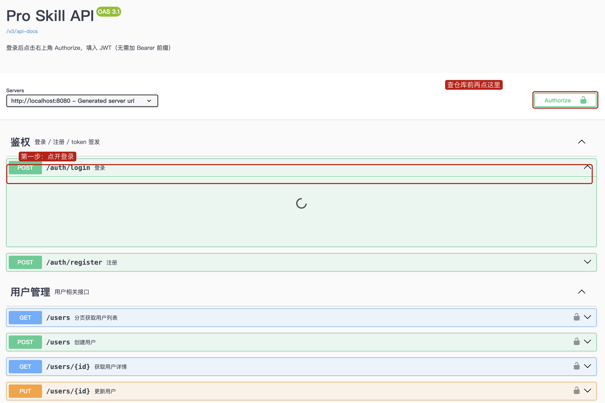
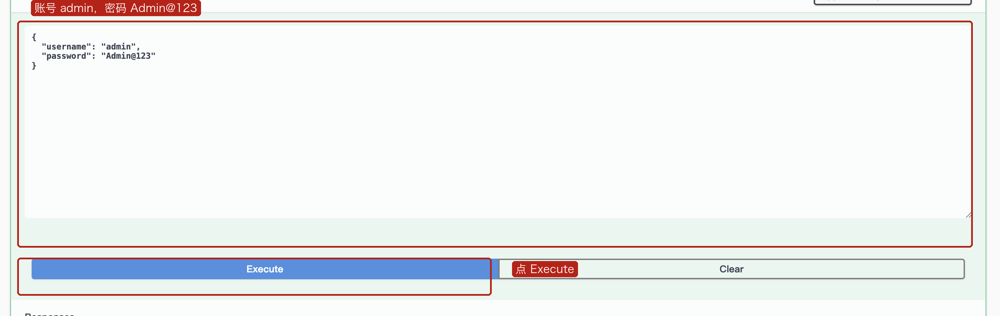
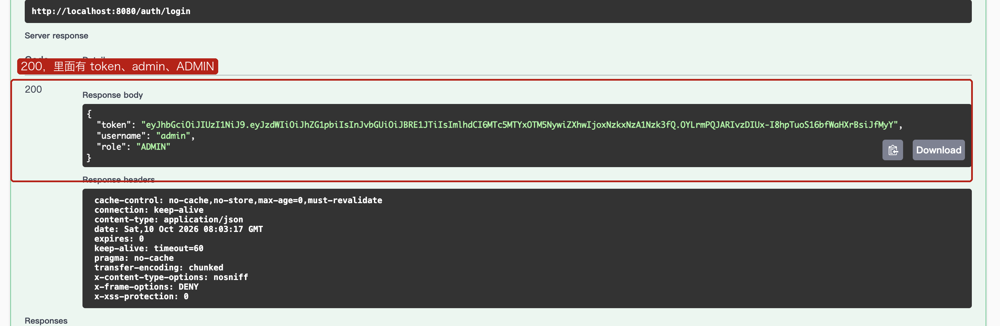

这 2 节课怎么用
前大约 50 分钟对着下面两节走：一次登录经过哪些文件夹，然后在 Swagger 里自己登录、再查仓库。后大约 40 分钟才讲货品编码可以重复的那个漏洞。货品的复现和修改仍按教案里的第二部分后半段做。
一次登录经过哪些层
浏览器发 POST /auth/login。代码按这个顺序走，不要在 Controller 里写 SQL。
接 JSON
校验并签发 token
读 tb_user
tb_user
Controller 只接收 LoginRequest，把结果装成 LoginResponse。业务放在 application 包的 Service 里。表上的一行是 entity，业务里用的对象是 domain，两者用 converter 转。SQL 只出现在 mapper。
仓库、库区、库位是同一套切法。打开 src/main/java/com/eurasia/pro_skill，对着这张表找文件。
| 包 | 这一层做什么 | 登录时看哪个文件 |
|---|---|---|
controller | 接 HTTP，校验入参 | AuthController |
controller/request | 请求体 | LoginRequest |
controller/response | 返回给页面的字段 | LoginResponse |
application | 业务 | AuthService |
domain | 业务对象 | User、AuthToken |
entity | 和表的一行对应 | UserEntity |
mapper | SQL | UserMapper |
converter | domain 和 entity 互转 | UserConverter |
AuthController 的 login 方法里只有对 authService.login 的调用，没有 SQL。SQL 在 Mapper 那一层。后面加货品时，也是先加表和 Entity，再加 Mapper、Service、Controller，而不是把插入语句写进 Controller。用 Swagger 把这条链路走一遍
浏览器打开 http://localhost:8080/swagger-ui.html。这是接口页面，分组来自代码里的 @Tag。现在能看到鉴权、用户管理、仓库、库区、库位。货品还没有，这周后半段才会出现。
1. 登录
找到「鉴权」，点开 POST /auth/login。这一行没有锁，不用先点 Authorize。

点 Try it out。请求体里已经是下面这两行时，直接点 Execute。不是的话改成这样再点。
{
"username": "admin",
"password": "Admin@123"
}

token，username 是 admin，role 是 ADMIN。把 token 整段复制下来，不要带引号。
2. 把 token 填进 Authorize
回到页面右上角，点 Authorize。框里只贴 token，不要自己加 Bearer 。点 Authorize，再点 Close。锁从打开变成锁上。
3. 查仓库
找到「FR-01 仓库管理」，点开 GET /warehouses/list。这一行有锁。Try it out，current 填 1，pageSize 填 10，其余空着，Execute。
records 里能找到编码 WH-001。这就是上学期已经放进库里的那条仓库。用户、库区、库位同样要先授权。登录和注册不用。看完再开始货品
货品也走同一套分层，也会出现在这个 Swagger 页面上。接下来先不把编码做成唯一：同一个 SKU-001 可以建两次，库里会出现两行。学生自己在 Adminer 的 sku 表里看见重复，再加唯一索引，让第二次创建失败。操作按教案第二部分的「具体设计」做。